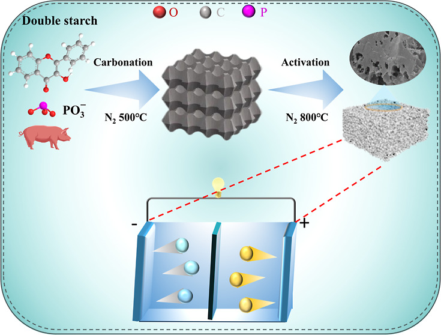
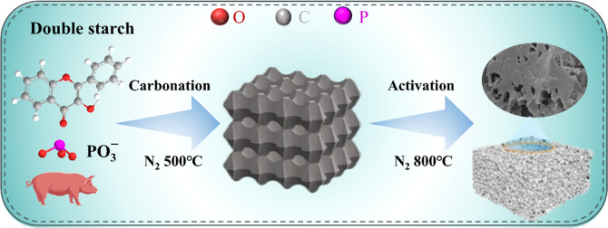
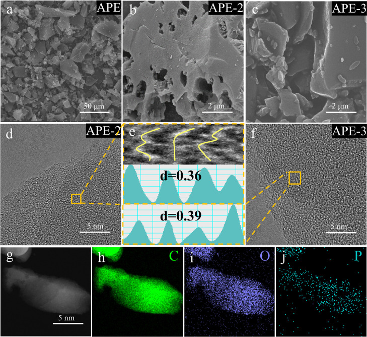
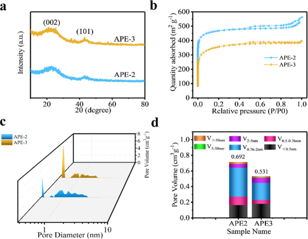
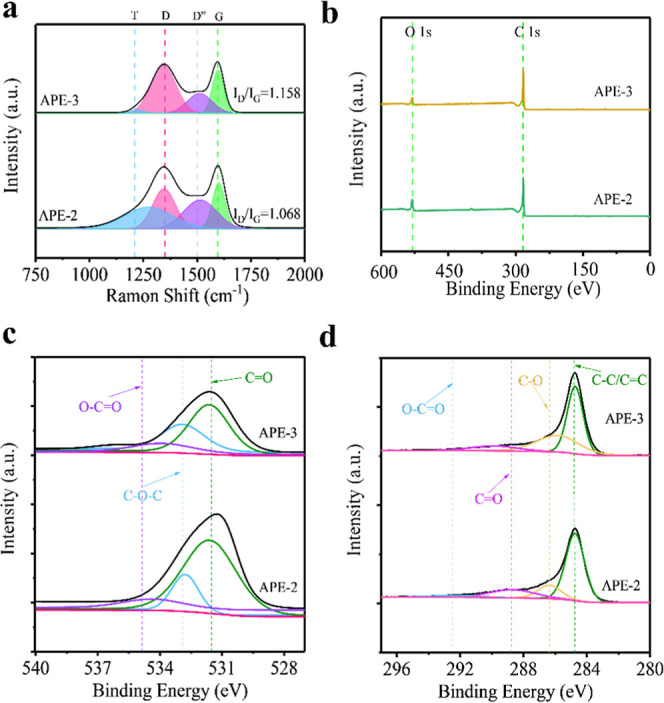
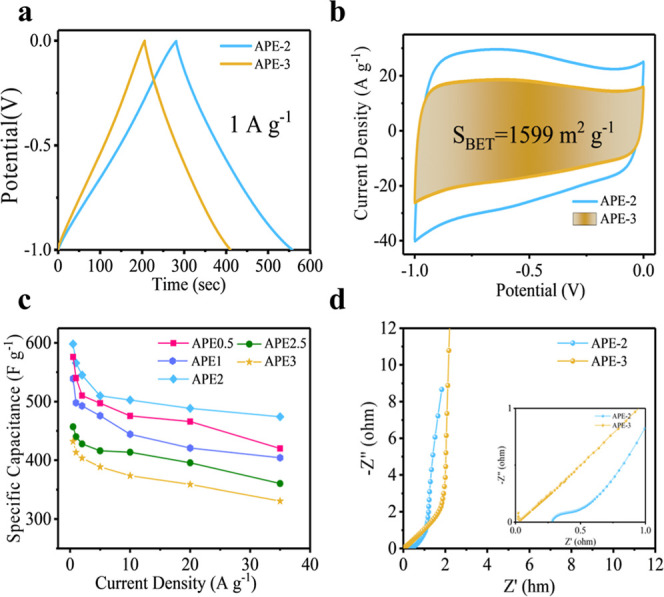
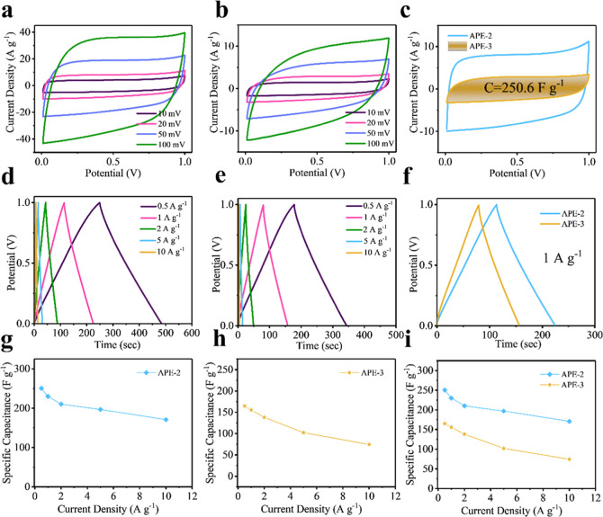
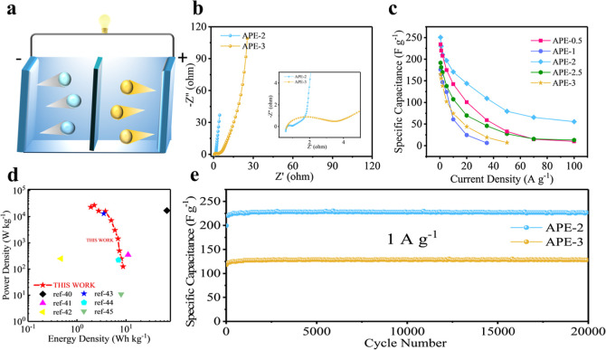

本地阅读版，依据出版社提交至PMC的原始JATS XML整理，供核对正文、图注、表格和原图。原始main.xml完整保留；此页不是出版社版式PDF。所有数字与正文冲突均保留原文，未修正或推算。实验准入状态见逐篇审核表。
While biomass-derived carbon materials have been extensively explored in the field of energy storage, research focusing on animal protein as a precursor remains relatively scarce, and its potential value is yet to be fully exploited. In this study, oxygen-rich protein-based biomass porous carbons were prepared using pork as the raw material and phosphate distarch as the additive via a strategy involving compositing, subsequent carbonization, and KOH activation. Among these carbons, sample APE-2 possessed a high oxygen content of 9.81%, a hierarchical micromesoporous structure dominated by micropores, specific surface area (SSA) per unit amount of 1599 m2 g–1, and pore volume at 0.692 cm3 g–1. Under a three-electrode cell where 6 M KOH functions as the electrolyte, it demonstrated an excellent reversible specific capacitance of 565 F g–1 under 1 A g–1 as well as outstanding rate capability, maintaining a specific capacitance of 474 F g–1 even at 35 A g–1. When utilized as electrode materials to assemble symmetric supercapacitors (SCs) using 6 M KOH, it achieved a prominent reversible specific capacitive performance at 250 F g–1 under 0.5 A g–1 as well as remained at 143 F g–1 under 20 A g–1. It also exhibits an ultrastable cycling behavior with nearly “zero decay” as evidenced by a capacitance retention of 99.7% after 20,000 cycles.


Against the backdrop of global energy transition, the innovation and advancement of high-efficiency, eco-friendly energy storage technologies within the realms of secondary batteries and energy storage have emerged as a critical scientific challenge demanding urgent breakthroughs. − SCs, characterized by elevated specific power, ultrastable cycling durability, besides excellent low-temperature performance, exhibit unique advantages within the realm of energy preservation. Electrode are the core elements determining the behavior of SCs, and carbonaceous materials have become a mainstream choice thanks to their elevated electrical conductivity, chemical stability, and abundant resources. As renewable carbon precursors, biomass-derived carbons have attracted considerable attention owing to their wide sources and excellent environmental compatibility.
Experimental and theoretical calculations have shown that the introduction of appropriate defects into carbon materials can substantially enhance their electrochemical activity. Nevertheless, for commercialization, it is imperative to further improve the initial Coulombic efficiency (ICE), as well as the cycle efficiency and rate capability. Among the solutions proposed so far, heteroatom doping and pore structure regulation are of critical significance. Through the introduction of heteroatoms, the electronic structure of carbon materials can be effectively modulated, additional active sites can be introduced, and the surface wettability with the electrolyte can be enhanced, thereby significantly boosting the capacitive performance and reaction kinetics pertaining to the apparatus. Adjustment of the pore architecture is equally important: micropores (<2 nm) offer a large SSA to enhance the EDLC, and the matching between their size and electrolyte ions directly influences the charge storage efficiency; mesoporous pores (sized between 2 and 50 nm) act as ion conduction pathways, which can significantly curtail the diffusion route besides improve the performance in terms of rate.
While biomass-derived carbons are widely studied, those from animal proteins remain scarce. This work utilizes pork, a novel animal protein precursor, composited with phosphorylated starch to synergistically create oxygen-rich hierarchical porous carbon. This approach uniquely addresses the need for high capacitance and ultrastable cyclability, demonstrating the significant potential of animal-derived carbons for advanced energy storage.
Phosphorylated distarch was selected as a novel multifunctional additive. It serves a dual purpose: its starch component creates mesopores as a sacrificial template, while the phosphate groups introduce oxygen functional groups for enhanced wettability and pseudocapacitance. This synergistic strategy innovatively tailors both pore structure and surface chemistry in a single step.
In this study, animal protein-based graded porous carbonaceous substances were synthesized using pork in the role of starting material and phosphorylated starch as the additive. Previous studies had prepared carbon materials from animal protein sources such as egg white. The multiple amino acids and unique fibrous structure of pork made it easier to form well-developed pores and high active sites during carbonization. By adjusting the mass ratio between the two, followed by carbonization and KOH activation, protein-based graded porous carbon was obtained (Scheme ). When the composite ratio was set to 2, the resultant sample, APE-2, exhibited remarkable properties: an oxygen content of 9.81%, a micromesoporous graded structure dominated by micropores, SSA measuring 1495 m2 g–1, besides a volume within pores measuring 0.692 cm3 g–1. In a three-electrode system, this material demonstrated excellent reversible specific capacitance, reaching 565 F g–1 under 1 A g–1, with exceptional performance in terms of rate, maintaining 474 F g–1 under 35 A g–1. This research provides insight into the impact of pore structure besides heteroatom content on the energy storage performance of protein-based carbon materials with porous structures. Compared with traditional biomass materials, it offers an effective strategy for developing high-performance SCs by introducing heteroatoms into animal proteins.

The specific preparation process of protein-based porous carbon was as follows: using pork as the raw material and phosphate ester distarch as the composite agent, the two were dispersed in a certain amount of deionized water at a specific ratio. After being stirred uniformly for 2 h, the mixture underwent vacuum freeze-drying to obtain a light yellow powder. 6 g of this light yellow pulverulence was weighed, increased to 500 °C at a heating rate of 5 °C under an inert gas environmental, besides held at this temperature level for a 2 h duration (average carbon yield is approximately 18%). Using KOH functioning as the agent for activation, the KOH was mixed with the aforementioned porous carbon-based precursor at a specific mass ratio, and an appropriate amount of ultrapure water was introduced into disperse the blend evenly, which was subsequently positioned in a drying oven set to for constant temperature drying. The dried mixture was put into a tube furnace, increased to 800 °C at a heating rate of 5 °C under an inert gas environmental, besides kept at this temperature for 2 h. Following cooling, it was washed repeatedly with 3 M HCl as well as ultrapure water, and dried to obtain the APE-X series samples (where X represents the mixing mass ratio, with X = 0.5, 1, 2, 2.5, and 3.).
Preparation process of symmetric supercapacitor (SC) electrodes: included were the active material (80% by weight), carbon black with conductivity (10 wt %), and PVDF (10 wt %), all of which were weighed according to their mass proportions. After mechanical grinding for 1 h to mix them evenly, ethanol in an adequate amount was introduced, besides grinding was continued in an agate mortar until an elastic, plasticine-like slurry was formed. The slurry was pressed into a thin sheet featuring a thickness measuring 0.1 mm, divided into circular electrode sheets with a diameter of 12 mm using a cutting machine, besides subsequently positioned in a vacuum oven for constant temperature drying under 80 °C for 16 h. After drying, the circular electrode sheets were taken out and compacted with circular nickel foam of 14 mm in diameter using a tablet press under a pressure of 15 MPa.
Assembly of SCs: type 2032 button battery cases were selected, with the electrolyte being 6 M KOH solution, nickel foam was fabricated by compression molding, besides working electrodes of the same mass and nonwoven diaphragms as internal components. The assembled capacitors were allowed to stand for 12 h to ensure that their electrochemical performance reached a stable state.
The TG/DTG curves, as shown in Figure S1, revealed a broadened weight loss profile through thermogravimetric analysis. The major weight loss, concentrated between 70 and 500 °C, was divided into four distinct stages: the first (70–150 °C, ∼3% weight loss) corresponded to the evaporation of adsorbed water and pyrolysis of small peptides; the second (150–290 °C, ∼15.3%) involved the initiation of protein pyrolysis with the release of CO2 and aromatic organics; the third (290–346 °C, ∼34.3%) featured further protein decomposition concurrent with fat pyrolysis, generating aldehydes and aromatics; the fourth (346–500 °C, ∼21.1%) marked the near-complete pyrolysis of fats and proteins, with the curve plateauing around 500 °C, indicating the conclusion of carbonization. − These results collectively demonstrate that the heating process induces melting, pyrolysis, and polycyclic aromatic ring formation of organic components in pork. The micropores (<2 nm) formed after carbonization facilitated the adsorption of electrolyte ions to enhance battery capacity but increased ion transport resistance; the mesopores (2–50 nm) could construct efficient ion transport channels to optimize transport efficiency under high rates, yet their ion adsorption capacity was relatively weak.
SEM images were presented in Figures and S2. APE-0.5 exhibited irregular carbon blocks stacked with smooth surfaces approximately 5 μm in length, and particles around 1 μm were attached to the sample surface. APE-1 showed a similar but slightly larger block-stacked morphology to APE-0.5. APE-2.5 displayed irregular blocks with smooth surfaces and lengths ranging from 10 to 15 μm. As shown in Figure a, the APE samples presented an irregular block structure. Figure b indicated that the APE-2 sample showed irregular blocks approximately 10 μm in length with loose pores around 1 μm in diameter distributed on the surface. Figure c revealed that the surface of the APE-3 sample was attached with irregular particles, which might be attributed to the high proportion of phosphate distarch composite.
Micromorphology as revealed by SEM and TEM. (a) SEM of APE. (b) APE-2. (c) APE-3. (d) TEM of APE-2. (e) High-magnification inset. (f) APE-3. (g–j) EDS mapping of C, O, and P.

TEM images of APE-2 and APE-3 were shown in Figure d–f, revealing irregular nanocarbon blocks stacked with mesopores (3–5 nm) distributed on the surface. Figure d exhibits broad and diffuse lattice fringes in APE-2, indicating a highly amorphous structure attributed to the etching effect of KOH activation on the carbon skeleton. As can be seen from Figure e,f, the interlayer spacings of APE-2 and APE-3, calculated from the lattice fringes, are 0.36 and 0.39 nm, respectively, which are significantly larger than that of standard graphite. This confirms their high degree of disorder and enhanced ion accommodation/diffusion capabilities. − HAADF-STEM mapping images (Figure g–j) of selected areas on APE-2 demonstrate uniform distribution of C, O, and P atoms, confirming successful incorporation of these elements into the carbon framework.
XRD patterns were shown in Figures a and S3a, broad diffraction peaks corresponding to the (002) and (101) crystal planes of graphite were observed at approximately 23.5° and 43.5°, revealing that the prepared carbon materials feature a highly amorphous structure. Additionally, the XRD results revealed that the intensity of the (002) peak decreased and broadened with increasing composite ratio, suggesting an increase in the defect density of the samples; excessive defects led to a decrease in electrical conductivity. Nitrogen adsorption–desorption isotherms (Figures b and S3b) exhibited a combined type I/IV behavior according to IUPAC classification, indicating a hierarchical micromesoporous structure. A rapid increase in nitrogen under low relative pressures (P/P 0 < 0.1) confirmed the existence of micropores, while a near-vertical inflection and subsequent plateau region suggested the existence of mesopores. Notably, sample APE-2 (mass ratio = 2) displayed a distinct H3-type hysteresis loop at intermediate to high P/P 0, characteristic of slit-shaped mesopores, and an upward tailing at P/P 0 > 0.95, indicating the presence of macropores.
(a) XRD. (b) Nitrogen adsorption/desorption isotherm. (c) NLDFT pore size distribution curve. (d) NLDFT pore volume histogram.

Pore size distribution curves calculated based on the NLDFT theory were shown in Figures c and S3c. The curves indicated that the pore size distribution was mainly within the 0.2–3 nm range, demonstrating a hierarchical porous structure dominated by micropores. Detailed pore parameters were presented in Figures d, S3d, and Table S1. The results presented that the specific surface area and micropore volume contribution of the samples first increased and then decreased. The total pore volume of each sample ranged from 0.531 to 0.692 cm3 g–1, with micropores of 0.76–2 nm in size being the dominant type. Among them, APE-2 exhibited a BET specific surface area of 1599 m2 g–1 and a total pore volume of 0.692 cm3 g–1.
In Raman spectroscopy, the D band (A1g vibrational mode of disordered sp3-hybridized carbon) appears around 1355 cm–1, while the G band (E2g mode of sp2-hybridized carbon pairs) was observed near 1580 cm–1. The intensity ratio of the D band to the G band (I D/I G) serves as a critical criterion for evaluating the graphitization degree of porous carbon materials. Raman spectra, presented in Figures a and S4a, showed that the I D/I G values of APE, APE-0.5, APE-1, APE-2, APE-2.5, and APE-3 were 0.954, 0.971, 1.045, 1.068, 1.128, and 1.158, respectively, with a gradual increase as the composite mass ratio increased. Among these samples, APE-3 (composite mass ratio = 3) exhibited a higher I D/I G value and a weaker diffraction intensity of the (002) crystal plane compared to APE-0.5, APE-1, APE-2, and APE-2.5. This further confirmed that the incorporation of phosphate distarch at a high ratio increased defects in the samples and reduced their graphitization degree.
Raman and XPS of APE-2 and APE-3. (a) Raman. (b) XPS. (c) C 1s. (d) O 1s.

XPS spectra were presented in Figures b and S4b, where the peaks centered at approximately 285 and 532 eV corresponded to C and O, respectively. The surface elemental contents are summarized in Table S2: the O contents of APE-0.5, APE-1, APE-2, APE-2.5, and APE-3 were 4.31%, 4.52%, 9.81%, 8.25%, and 5.86%, respectively. Among these samples, APE-2 exhibited the highest O content of 9.81%, which could be attributed to the successful incorporation of oxygen-containing groups from phosphate distarch and KOH into the carbon framework. Amino acids in animal protein decomposed into inorganic substances such as CO2, H2O, N2 (or NO x ) during high-temperature calcination. This could have resulted in an excessively low N element content (<0.1%) in the final sample, which could not be detected. Additionally, due to the low phosphorus content (0.27–0.89%), effective fitting of peaks corresponding to phosphorus atomic configurations was not feasible, so further investigation on P was not conducted. ,
The fitted C 1s spectra were shown in Figure c, with four fitted peaks at 284.7, 285.6, 287.2, and 289.3 eV, which were assigned to the carbon configurations of C–C/CC, C–O, CO, and O–CO, respectively. The fitted O 1s spectra (Figure d) exhibited peaks at 531.4, 533.6, and 535.7 eV, which were assigned to the oxygen configurations of CO, C–O–C, and O–CO. Generally, the CO configuration possesses abundant electrochemical activity and can provide additional pseudocapacitance through reversible redox reactions. As revealed by the fitted O 1s spectra, the oxygen configurations of CO, C–O–C, and O–CO had been successfully doped into the carbon framework, with APE-2 showing a high oxygen content of 9.81%. A direct correlation was observed between the oxidation peak at approximately 0.9 V in the cyclic voltammetry (CV) curve and the carbonyl group (CO), and the carboxyl group (O–CO) made a prominent contribution to the capacitance. These results indicated that APE-2 had a rich surface oxygen content, which could contribute capacitive capacity through reversible Faradaic reactions, thereby enhancing its charge storage capability.
The three-electrode system employed a calomel electrode as the reference and used M KOH as the electrolyte, with a voltage window of −1.0 ∼ 0.0 V for electrochemical performance evaluations. GCD curves measured at a current density of 1 A g–1 were depicted in Figures a and S5a. The charge–discharge curves of all samples showed an isosceles triangle-like shape with evident curvature. CV curves recorded at a scan rate of 20 mV s–1 were presented in Figures b and S5b, where all samples showed a trapezoid-like shape-an indicator of a hybrid energy storage mechanism combining EDLC and pseudocapacitance. Notably, the APE-2 sample displayed the largest integrated area at the same scan rate and the longest discharge time at the same current density compared to APE-0.5, APE-1, APE-2.5, and APE-3, demonstrating its superior reversible specific capacitance.
(a) GCD at 1 A g–1. (b) CV at 20 mV s–1. (c) Specific capacity at different current densities. (d) EIS.

Rate performance was shown in Figure c. The APE-2 sample delivered a superior reversible specific capacitance of 598 F g–1 at 0.5 A g–1, outperforming APE-0.5 (576 F g–1), APE-1 (457 F g–1), APE-2.5 (539 F g–1), and APE-3 (432 F g–1). Moreover, its reversible specific capacitance remained higher than the other samples across different current densities. At an elevated current density of 35 A g–1, the capacitance maintenance rate relative to that at 0.5 A g–1 reached 79.26%, confirming its outstanding rate performance. EIS spectra were shown in Figures d and S5c,d. In the low-frequency region, APE-2 exhibited a steeper linear slope, indicating faster ion transport and more pronounced capacitive behavior. At higher frequencies, it displayed a more compact semicircle diameter, corresponding to lower charge transfer resistance and thus facilitating faster ion conduction.
Symmetric SCs were fabricated with 6 M KOH electrolyte, operating within a voltage window of 0.0 ∼ 1.0 V. CV curves were shown in Figures a,b and S6a–c. With an elevated scan rate of 100 mV s–1, APE-2 and APE-3 exhibited axially symmetric shuttle-shaped CV curves, verifying the presence of pseudocapacitive contributions in the symmetric SCs based on 6 M KOH electrolyte. Additionally, CV curve of APE-2 featured a weak oxidation peak at 0.9 V, attributed to electrochemical active sites introduced by oxygen atoms in APE-2. CV curves at the same scan rate were displayed in Figures c and S6d; at 20 mV s–1, nearly rectangular with slight redox humps, indicative of a hybrid energy storage mechanism involving both EDLC and pseudocapacitance. APE-2 presented the largest integrated area, confirming its higher reversible specific capacitance compared to APE-0.5, APE-1, APE-2.5, and APE-3.
CV and GCD curves (a) CV of APE-2. (b) APE-3. (c) Same scanning rate. (d) GCD of APE-2. (e) APE-3. (f) Same current density. (g) Calculated capacity of APE-2. (h) APE-3. (i) Comparison figure.

GCD curves were illustrated in Figures d,e and S7a–c. All curves showed quasi-triangular with nonlinear charge–discharge processes, confirming the coexistence of EDLC and pseudocapacitive mechanisms. GCD curves at the same current density were presented in Figures f and S7d, the rate performance of APE-2 is significantly superior to that of APE-3. As shown in Figure g–i, calculated by eq S1, APE-2 provides the longest discharge time at a current density of 1 A g–1, corresponding to a high reversible specific capacitance of up to 230 F g–1, which exceeds the specific capacities of APE-0.5 (220 F g–1), APE-1 (165 F g–1), APE-2.5 (181 F g–1), and APE-3 (155 F g–1). The decrease in specific capacity of the other samples was closely related to the reduction in their pore volume and the increase in defects.
A schematic of the symmetric supercapacitor constructed with APE-2 was shown in Figures a and S8. EIS spectra and a high-frequency magnification were displayed in Figures b and S9a. Among the existing samples, APE-2 exhibited smaller ion diffusion resistance. In the low-frequency region, APE-2 showed a steeper linear slope, indicating faster ion transport and enhanced capacitive behavior. In the medium-frequency region, it had a shorter 45° diagonal tangent, corresponding to a lower Warburg coefficient and reduced ion diffusion resistance, which promoted rapid active ion migration. At higher frequencies, a smaller semicircle diameter indicated lower charge transfer resistance, enabling faster ion conduction.
(a) Schematic diagram of SC principle. (b) EIS. (c) Specific capacity at different current densities. (d) Ragone. (e) Long cycle.

A comparison of reversible specific capacitances at various current densities was presented in Figure c, where APE-2 demonstrated significantly better rate characteristics than the other samples. The Ragone plot in Figure d shows that, calculated by eqs S2 and S3, APE-2 achieves a maximum energy density of 8.71 Wh kg–1, a maximum power density of 23,080 Wh kg–1, which has application potential. − Long-cycle tests were shown in Figures e and S9b. After more than three standardized tests, APE-2 maintained a reversible specific capacitance of 230 F g–1 at 1 A g–1, thanks to the structural integrity of the carbon skeleton, 99.7% of the capacitance was retained.
In any case, the SCs constructed using APE-2 as the electrode material exhibited excellent electrochemical properties, which could be primarily attributed to three reasons: (1) the hierarchical porous structure dominated by large-sized micropores provided fast channels for active ions and an ultrastable cycle life; (2) the high oxygen content of up to 9.81%, resulting from phosphate distarch composite and KOH activation, offered abundant pseudocapacitance, thereby enhancing the charge storage capability; (3) the constructed symmetric SCs achieved a maximum energy density and power density output of 8.71 Wh kg–1 and 23.08 kW kg–1, respectively. It is correct to state near-zero fade with 99.7% retention after 20,000 cycles, achieving nearly “zero loss”. The results demonstrated that APE-2, with its optimal hierarchical porous structure and high oxygen content, demonstrated outstanding electrochemical properties when applied as a supercapacitor electrode, indicating its strong potential for use in energy storage systems.
This work was supported by the National Natural Science Foundation of China (No. 22209087), Key Science and Technology Project of Henan Province (No. 252102230087), Young Backbone Teacher Training Program of Henan Province Undergraduate Colleges (No. 2024GGJS133).
The Supporting Information is available free of charge at https://pubs.acs.org/doi/10.1021/acsomega.5c08616.
The TF/DTG curves of pork is shown in Figure S1; SEM photographs of samples (APE-X, X = 0.5, 1, 2.5, and 3) are shown in Figure S2; the XRD patterns, N2 adsorption/desorption isotherms, APE-X pore size distribution curves are shown in Figure S3 and Table S1; Raman and XPS spectra were presented in Figure S4; the electrochemical performance tests under the three-electrode system are shown in Figure S5; CV are shown in Figure S6; GCD are shown in Figure S7; EIS and long cycle curves are shown in Figure S7; the contents of functional group elements (carbon, oxygen, and phosphorus) in APE-X are shown in Table S2 (PDF)
H.P.: designed the project, wrote manuscript, analyze and organize data. H.L.: test. Y.L. and H.Z.: proofread. Z.W.: provided suggestions. M.W.: provided suggestions and technical support.
The authors declare no competing financial interest.
Jamehbozorg R., Tehrani F. S., Ahmadi Z., Abdi Y.. Ag0.5Zn0.5Fe2O4 nanoparticles: A novel ferrite additive for PANI-based all-solid-state flexible supercapacitors. J. Energy Storage. 2025;131:117666. doi: 10.1016/j.est.2025.117666.
Karimi M., Shirzad M., Silva J. A. C., Rodrigues A. E.. Carbon dioxide separation and capture by adsorption: a review. Environ. Chem. Lett. 2023;21:2041–2084. doi: 10.1007/s10311-023-01589-z.
Nedopil C.. Lessons from China’s overseas coal exit and domestic support. Science. 2023;379(6637):1084–1087. doi: 10.1126/science.adf0126.
Gibbons B., Cairnie D. R., Thomas B., Yang X., Ilic S., Morris A. J.. Photoelectrochemical water oxidation by a MOF/semiconductor composite. Chem. Sci. 2023;14(18):4672–4680. doi: 10.1039/D2SC06361A.
Mineo G., Bruno E., Mirabella S.. Advances in WO(3)-Based Supercapacitors: State-of-the-Art Research and Future Perspectives. Nanomaterials. 2023;13(8):1418. doi: 10.3390/nano13081418.
Li B., Liu S., Yang H., Wang R., Xu X., Zhou Y., Zhang Y., Yang D., Li J.. Fabrication of Coral-like Polyaniline/Continuously Reinforced Carbon Nanotube Woven Composite Films for Flexible High-Stability Supercapacitor Electrodes. ACS Appl. Mater. Interfaces. 2023;15(3):4343–4357. doi: 10.1021/acsami.2c20626.
Kumar A., Hsu C.-Y., Ved A., Premkumar R., Sahu B. N., Kant S., Aggarwal A., Jassal P., Dehghanipour M.. Emerging frontiers in supercapacitors: Synergistic applications of two-dimensional and three-dimensional composite materials for energy storage. J. Energy Storage. 2025;132:117667. doi: 10.1016/j.est.2025.117667.
Sinha R., Kiran P. S., Kumar K. V., Pandit N., Satish C., Keshri S., Keshri A. K.. MXene/Biomass-derived activated carbon composite for supercapacitor applications. Carbon. 2025;236:120101. doi: 10.1016/j.carbon.2025.120101.
Wang Y., Kong Q., Huang X., Li R., Zhou C., Li Z.. High-performance polypyrrole-coated carbon nanotube/silk composites with high electrical conductivity for flexible supercapacitor. Surf. Interfaces. 2025;72:107053. doi: 10.1016/j.surfin.2025.107053.
Guo C., Sun Y., Ren H., Li J., Wang B., Li C., Ma Z., Wu J., Peng W., Tong X.. SiO2-assisted constructing narrow micropore-enriched carbon derived from millet husk for enhanced CO2 capture and supercapacitor performance. Sep. Purif. Technol. 2025;376:133933. doi: 10.1016/j.seppur.2025.133933.
Zhong K., Wang Z., Wang E., Wang H., Wang N., Huang X., Qian X.. Carbonized paper-supported electrode with metal-organic framework-derived porous carbon embedded into carbonized cellulose fibers for flexible supercapacitor. J. Power Sources. 2025;652:237668. doi: 10.1016/j.jpowsour.2025.237668.
Dhavale S. B., Patil S. S., Patil A. P., Patil P. S.. Upscaling biomass derived carbon for sustainable supercapacitors: an overview. J. Power Sources. 2025;653:237712. doi: 10.1016/j.jpowsour.2025.237712.
Yao L., Wu B., Fan H., Gu J., Yuan H., Xie J.. An investigation on synergistic effects and kinetic characteristics of pyrolysis of kitchen waste components: Starch, protein and lipid. J. Environ. Chem. Eng. 2024;12(6):114619. doi: 10.1016/j.jece.2024.114619.
Wang C., Yang X., Hassan B., Yu C., He H., Xu Z., Huang B., Pan X.. Synergetic pyrolysis mechanism of typical organic components of sewage sludge in the presence of CaO: Lipids, proteins, and polysaccharides. Fuel. 2025;380:133213. doi: 10.1016/j.fuel.2024.133213.
Vikraman V. K., Manalil S.. Pyrolysis of post-consumption food waste with insights into kinetics, energy demand and products analysis. Biomass Bioenergy. 2025;201:108152. doi: 10.1016/j.biombioe.2025.108152.
Wei X., Ma X., Peng X., Yao Z., Yang F., Dai M.. Comparative investigation between co-pyrolysis characteristics of protein and carbohydrate by TG-FTIR and Py-GC/MS. J. Anal. Appl. Pyrolysis. 2018;135:209–218. doi: 10.1016/j.jaap.2018.08.031.
Deshpande A., Jadhav S., Manohar K., Rawat S., Gosavi S., Rayalu S.. Conversion of Non-biodegradable Super Absorbing Polymer (SAP) Waste into MnO-rich Functional Supercapacitor Carbon by a Sustainable, Low-Temperature Activation Process. ACS Sustainable Resour. Manage. 2025;2(2):234–242. doi: 10.1021/acssusresmgt.4c00259.
Ma L., Ma H., Sheng H., Bi H., Li F., Yuan J., Ma Y., Yue Q., Li Y., Lan W.. A Supercapacitor Diode with High Rectification Ratio Induced by Carbon and Oxygen Vacancies. ACS Nano. 2025;19(21):19744–19756. doi: 10.1021/acsnano.5c01898.
Ren D., Zhang S., Dai J., Lan J., Qiu D., Zhang K., Bi H., Huang F.. Sulfur-Functionalized Carbon Nanotubes with Inlaid Nanographene for 3D-Printing Micro-Supercapacitors and a Flexible Self-Powered Sensing System. ACS Nano. 2024;18(31):20706–20715. doi: 10.1021/acsnano.4c06879.
Aslfattahi N., Kiai M. S., Baydogan N., Samylingam L., Kadirgama K., Kok C. K.. Integration of Carbon-Doped ZnO/S Cathode and Silicon/Graphene Nanoplate Anode for Silicon–Sulfur Batteries. ACS Appl. Nano Mater. 2025;8(16):8113–8121. doi: 10.1021/acsanm.5c00563.
Ren T., Wang K., Lian X., Xu C., Niu H.. Nitrogen-Doped Carbon Nanotubes on Carbon Nanofibers for Applications as Supercapacitors with Long Lifetimes. ACS Appl. Nano Mater. 2025;8(22):11359–11369. doi: 10.1021/acsanm.5c01120.
Zhao C., Gao W., Zhao Y., Li M., Tong X., Guo H., Zhu Y., Zhao C.. Nanoarchitectonics with Expired Carbon Fiber Reinforced Polymer-Derived Carbon Layer@Carbon Fiber Coaxial Electrodes for Superior Supercapacitor Performance. J. Phys. Chem. C. 2024;128(50):21280–21291. doi: 10.1021/acs.jpcc.4c05557.
Bora M., Goswami P. P., Mahanta D., Saikia B. K.. Transforming Fallen Leaves into High-Performance Activated Carbon for Supercapacitor Applications. Energy Fuels. 2025;39(21):9917–9930. doi: 10.1021/acs.energyfuels.5c00192.
Seo J.-H., Kumar A., Barpaga D., Makovsky K. A., Sinnwell M. A., Krogstad E. J., McHugh K.. Enhancement of Uranium Ionization Efficiencies Using Zn-MOF-74 Derived Nanoporous Ion Emitters for Thermal Ionization Mass Spectrometry. Anal. Chem. 2025;97(19):10200–10207. doi: 10.1021/acs.analchem.4c06921.
Wang R., Cheng J., Teng W., Qin J., Xiao P., Wang C., Peng J., Liu H., Wang D.. Locking Pd Nanoparticles in N-Doped Carbon Derived from Conjugated Microporous Polymer for Stable Lithium Metal Anodes. ACS Appl. Mater. Interfaces. 2025;17(7):10570–10579. doi: 10.1021/acsami.4c17564.
Rathore L. K., Nagar V., Pranghol G., Bera A.. Green Upcycling of Crop Residue into Activated Carbon in Designing Photothermal/Adsorptive Membrane for Solar-Driven Desalination and Simultaneous Volatile Organic Compound Removal. ACS Appl. Mater. Interfaces. 2025;17(21):30954–30965. doi: 10.1021/acsami.5c04219.
Fu F., Yang D., Wang H., Qian Y., Yuan F., Zhong J., Qiu X.. Three-dimensional Porous Framework Lignin-Derived Carbon/ZnO Composite Fabricated by a Facile Electrostatic Self-Assembly Showing Good Stability for High-Performance Supercapacitors. ACS Sustainable Chem. Eng. 2019;7(19):16419–16427. doi: 10.1021/acssuschemeng.9b03521.
Wang S., Liu Y., Wang H., Wang X., Li L., Wang T.. Efficient Fabrication of Hierarchical Porous Carbon Fibers with Tunable Mesopores from Discarded Aramid for Supercapacitors. ACS Appl. Energy Mater. 2023;6(18):9371–9380. doi: 10.1021/acsaem.3c01314.
Jin X.-Y., Zhao J., Ge Q., Jiang N., Liu M., Cong H., Zhang Y.-Q.. Carbon Nanomaterials Made from Supramolecular Hybridization of Cucurbit[6]uril with Phosphomolybdic Acid for Supercapacitors. ACS Appl. Nano Mater. 2023;6(4):2459–2471. doi: 10.1021/acsanm.2c04737.
Latifi A., Nilkar M., Jafari S.. N-Doped NiO@MXene/Carbon Nanofiber Composites for High-Performance Flexible Supercapacitor Electrodes. Energy Fuels. 2025;39:14385–14399. doi: 10.1021/acs.energyfuels.5c02299.
Yu X., Qin X., Zhao Z., Liu S., Zhang R., Liu L.. Nitrogen-Doped Carbon Nanospheres Dispersed within Graphene Oxide to Fabricate Composite Fibers for High Performance Flexible Supercapacitors. ACS Appl. Nano Mater. 2025;8(4):1935–1943. doi: 10.1021/acsanm.4c06469.
Dauda M. O., Bello M., Hendershot J., Kingsley N., Agbadan I., Park J., Tasnim S., Oduyebo O., Engler A. C., Plaisance C., Flake J. C.. Highly Selective Electrolytic Reduction of CO2 to Ethylene. ACS Appl. Energy Mater. 2025;8:13607–13619. doi: 10.1021/acsaem.5c01866.
Sang J., Wei P., Liu T., Lv H., Ni X., Gao D., Zhang J., Li H., Zang Y., Yang F., Liu Z., Wang G., Bao X.. A Reconstructed Cu2P2O7 Catalyst for Selective CO2 Electroreduction to Multicarbon Products. Angew. Chem., Int. Ed. 2022;61(5):e202114238. doi: 10.1002/anie.202114238.
Perumalsamy V., Bahadur R., Vijay Baskar A., Sathish C. I., Maria Ruban A., Cheng Z., Li X., Singh G., Yi J., Vinu A.. Nanoarchitectonics of N- and S-Doped Nanoporous Biocarbons with High Specific Surface Area from Casein and Dithiooxamide for Supercapacitor Applications. Adv. Energy Sustainability Res. 2025;6(7):2500037. doi: 10.1002/aesr.202500037.
Tian W., Ren P., Hou X., Fan B., Wang Y., Wu T., Wang J., Zhao Z., Jin Y.. N-Doped Holey Graphene/Porous Carbon/Cellulose Nanofibers Electrode and Hydrogel Electrolyte for Low-temperature Zinc-ion Hybrid Supercapacitors. Small. 2025;21(10):2411657. doi: 10.1002/smll.202411657.
Liu Y., Chen W., Zhang X., Liu B., Liu Y., Lu R., Wu X.. Molten Salt Construction of Nitrogen, Oxygen, Sulfur Co-Doped Hierarchical Porous Carbon for Zinc Ion Hybrid Capacitors. Adv. Sustainable Syst. 2025;9(3):2401000. doi: 10.1002/adsu.202401000.
He Q., Ling Z.-C., Li D.-H., Yang K.-P., Yang H.-B., Yan Z.-K., Han Z.-M., Zhao Y.-X., Yin C.-H., Guan Q.-F., Yu S.-H.. Sargassum Nanocellulose-Based Fully Ingestible Supercapacitor. Adv. Mater. 2025;37(9):2416307. doi: 10.1002/adma.202416307.
Li J., Ge K., Grammenos A. O., Taberna P.-L., Simon P., Antonietti M., Odziomek M.. Understanding Multi-Stage Charge Storage on Nanoporous Carbons in Zn-Ion Hybrid Capacitors. Adv. Mater. 2025;37(24):2502422. doi: 10.1002/adma.202502422.
Shi M., Han X., Qu W., Jiang M., Li Q., Jiang F., Xu X., Ifuku S., Zhang C., Wang C., Hu J., Yang L., Lin Y., Yu H., Liu S., Li J., Wu Y., Chen W.. Nanocellulose-Derived Hierarchical Carbon Framework-Supported P-Doped MoO2 Nanoparticles for Optimizing Redox Kinetics in Lithium–Sulfur Batteries. Adv. Mater. 2025;37(22):2419918. doi: 10.1002/adma.202419918.
Das A., Mondal A., Khatua B. B.. Tuning the Electrochemical Performance of Cu2S/Co3S4 via Optimized CNT Incorporation for High Energy and High Power Supercapacitor Application. ACS Appl. Energy Mater. 2025;8(6):3812–3825. doi: 10.1021/acsaem.5c00044.
Shi Y., Xue J., Yu Y., Wu G., Tang C.. Biochar Derived from Waste Momordica Cochinchinensis Seed Shell as High-Performance Supercapacitor Electrodes. ACS Appl. Energy Mater. 2025;8(3):1535–1543. doi: 10.1021/acsaem.4c02581.
Samartzis N., Athanasiou M., Dracopoulos V., Yannopoulos S. N., Ioannides T.. Laser-assisted transformation of a phenol-based resin to high quality graphene-like powder for supercapacitor applications. Chem. Eng. J. 2022;430:133179. doi: 10.1016/j.cej.2021.133179.
Hu L., Chen W., Xie X., Liu N., Yang Y., Wu H., Yao Y., Pasta M., Alshareef H. N., Cui Y.. Symmetrical MnO2–Carbon Nanotube–Textile Nanostructures for Wearable Pseudocapacitors with High Mass Loading. ACS Nano. 2011;5(11):8904–8913. doi: 10.1021/nn203085j.
Dhavale R. P., Parale V. G., Teli A. M., Gupta N. K., Patil U. M., Choi H., Patil A. M., Phadtare V. D., Ransing A. A., Park H.-H.. Reduced Graphene Oxide–Sodium Manganese Oxide Nanowire Nanocomposite Aerogels for Asymmetric Supercapacitors: Impact of Composite Concentration. ACS Appl. Mater. Interfaces. 2025;17(17):25193–25205. doi: 10.1021/acsami.4c22065.
Liu X., Liu C.-F., Xu S., Cheng T., Wang S., Lai W.-Y., Huang W.. Porous organic polymers for high-performance supercapacitors. Chem. Soc. Rev. 2022;51(8):3181–3225. doi: 10.1039/D2CS00065B.